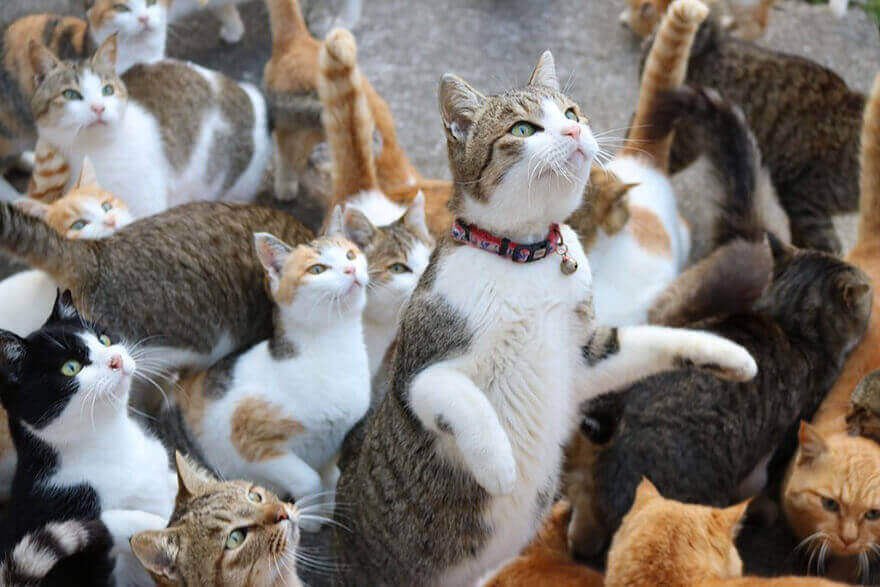
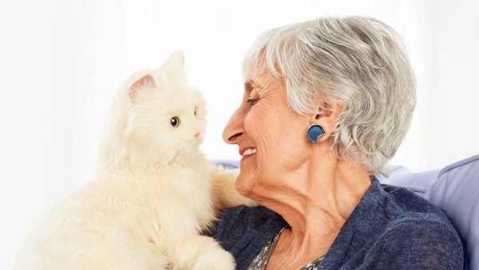
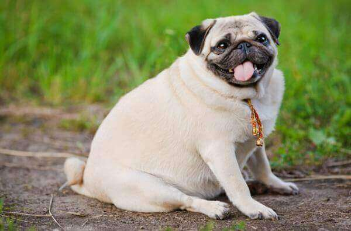
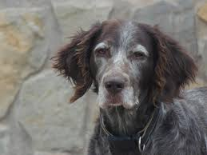
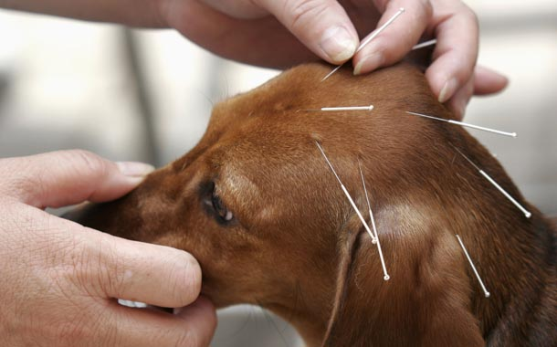
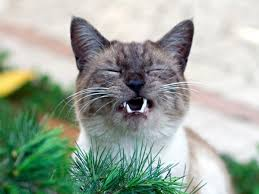

Seguro que te suena esto,
y tu perro va corriendo a
ti y muestra la alegría.
Lo cierto es que hay
respuestas tanto positivas
como negativas.
DATOS Y TIPS
-
¿Debo dejar que mi perro me lama la cara?
-
 Síndrome de Noé, trastorno de acumulamiento compulsivo de animales
-
 ¿Por qué aúllan los perros al escuchar sirenas?
¿Por qué aúllan los perros al escuchar sirenas?
-
 Beneficios de las mascotas para las personas mayores
-
 ¿Cómo evitar la obesidad en las mascotas?
-
 ¿Por qué le salen canas a mi perro?
-
 Ahora tu mascota estará sana gracias a la acupuntura
-
 ¿Por qué los gatos jadean?